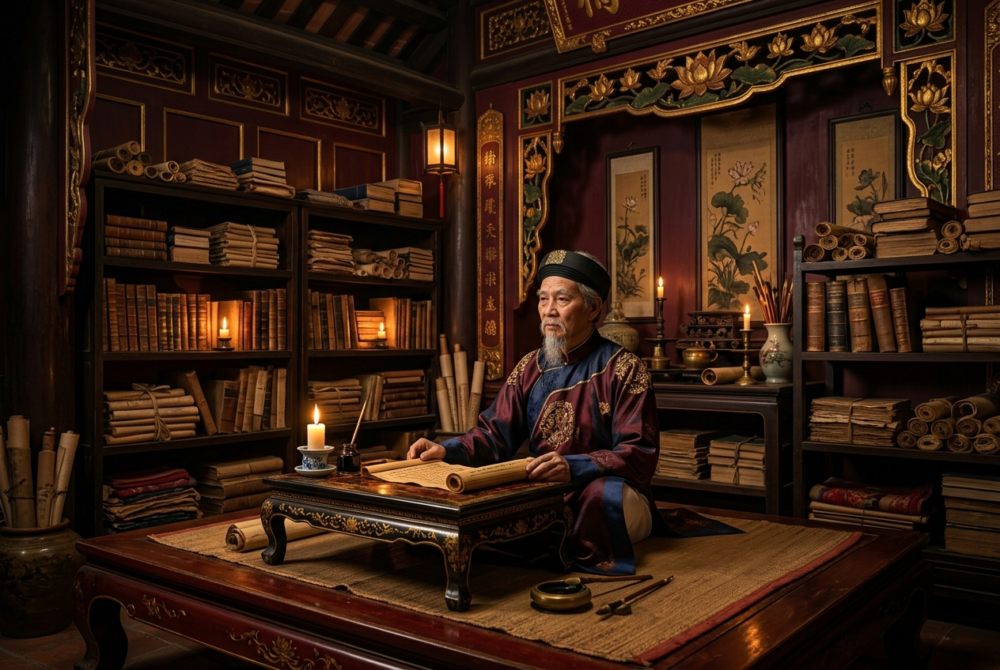

Quan niệm về văn hóa & Mối quan hệ với các lĩnh vực khác
🎯 Mục tiêu: Hiểu định nghĩa văn hóa của HCM (4 cách tiếp cận) và quan hệ biện chứng giữa văn hóa với kinh tế, chính trị, xã hội.
📖 Định nghĩa văn hóa (Nghĩa rộng, 8-1943)
"Vì lẽ sinh tồn cũng như mục đích của cuộc sống, loài người mới sáng tạo và phát minh ra ngôn ngữ, chữ viết, đạo đức, pháp luật, khoa học, tôn giáo, văn học, nghệ thuật, những công cụ cho sinh hoạt hằng ngày về mặc, ăn, ở và các phương thức sử dụng. Toàn bộ những sáng tạo và phát minh đó tức là văn hóa."
1. Bốn cách tiếp cận về văn hóa
- Theo nghĩa rộng: Tổng hợp mọi phương thức sinh hoạt của con người.
- Theo nghĩa hẹp: Đời sống tinh thần của xã hội, thuộc kiến trúc thượng tầng.
- Theo nghĩa hẹp hơn: Bàn đến trường học, số người đi học, xóa nạn mù chữ.
- Tiếp cận theo phương thức sử dụng: Việc sử dụng công cụ sinh hoạt hằng ngày.
2. Quan hệ giữa văn hóa với các lĩnh vực khác
Với chính trị
Phải giải phóng chính trị để mở đường cho văn hóa phát triển. Văn hóa không thể đứng ngoài mà phải ở trong chính trị, phục vụ nhiệm vụ chính trị.
Với kinh tế
Cơ sở hạ tầng có kiến thiết rồi văn hóa mới kiến thiết được. Tuy nhiên, văn hóa không hoàn toàn phụ thuộc mà có vai trò tác động tích cực trở lại kinh tế.
Với xã hội
Giải phóng xã hội thì văn hóa mới phát triển. Làm cách mạng giành chính quyền, giải phóng XH thì mới giải phóng được văn hóa.
Giữ gìn bản sắc & tiếp thu tinh hoa
Bảo vệ bản sắc cốt cách dân tộc (lòng yêu nước, tự cường, truyền thống...), đồng thời tiếp biến văn hóa, chắt lọc tinh hoa nhân loại làm giàu văn hóa VN.
Vai trò văn hóa & Xây dựng nền văn hóa mới
🎯 Mục tiêu: Nắm được quan điểm HCM về vai trò của văn hóa (mục tiêu, động lực, một mặt trận) và các nguyên tắc xây dựng nền văn hóa mới.
1. Quan điểm về vai trò của văn hóa
Văn hóa là mục tiêu, động lực của sự nghiệp cách mạng
Mục tiêu là quyền sống, tự do, hạnh phúc. Động lực biểu hiện qua: Văn hóa chính trị soi đường; Văn hóa văn nghệ nâng cao tinh thần; Văn hóa giáo dục "trồng người"; Văn hóa đạo đức lối sống nâng cao phẩm giá; Văn hóa pháp luật bảo đảm trật tự.
Văn hóa là một mặt trận
Quan trọng ngang kinh tế, chính trị. Văn hóa là cuộc chiến đấu trên lĩnh vực tư tưởng. "Văn hóa nghệ thuật cũng là một mặt trận. Anh chị em là chiến sĩ trên mặt trận ấy".
Văn hóa phục vụ quần chúng nhân dân
Mọi hoạt động văn hóa phải trở về với cuộc sống của quần chúng, trả lời được: Viết cho ai? Mục đích viết? Viết phải thiết thực, từ trong quần chúng ra và hướng về quần chúng.
2. Xây dựng nền văn hóa mới
Trước CM Tháng 8 (1943)
Đề ra 5 nội dung: Xây dựng tâm lý (độc lập tự cường), luân lý (hy sinh lợi ích chung), xã hội (phúc lợi), chính trị (dân quyền), kinh tế.
Trong Kháng chiến chống Pháp
Xây dựng nền văn hóa mang 3 tính chất: Dân tộc (bản sắc), Khoa học (chống mê tín), Đại chúng (phục vụ nhân dân).
Thời kỳ xây dựng CNXH
Xây dựng nền văn hóa có nội dung XHCN và tính chất dân tộc.
Vai trò và sức mạnh của đạo đức cách mạng
🎯 Mục tiêu: Hiểu tại sao đạo đức là "gốc", là nền tảng tinh thần của người cách mạng, và quan hệ giữa đức với tài.
📖 Trích dẫn kinh điển
"Cũng như sông thì có nguồn mới có nước, không có nguồn thì sông cạn. Cây phải có gốc, không có gốc thì cây héo. Người cách mạng phải có đạo đức, không có đạo đức thì dù tài giỏi mấy cũng không lãnh đạo được nhân dân."
1. Đạo đức là gốc, nền tảng tinh thần
Trong tư tưởng HCM, đạo đức cách mạng là gốc của người cách mạng. Sức mạnh giải phóng dân tộc là to lớn, nhưng không có đạo đức, tự mình hủ hóa thì không làm nổi việc gì. Đạo đức chính là tiêu chuẩn hàng đầu.
2. Mối quan hệ Đức và Tài
Thống nhất hữu cơ
Đức và tài, "hồng" và "chuyên" phải gắn kết. "Có tài mà không có đức là người vô dụng, có đức mà không có tài thì làm việc gì cũng khó". Đức là đạo đức cách mạng, là gốc.
Thước đo lòng cao thượng
Công việc có thể to hay nhỏ, năng lực khác nhau, nhưng ai giữ được đạo đức đều là người cao thượng. Đạo đức là nhân tố tạo nên sức hấp dẫn của Chủ nghĩa xã hội.
Các chuẩn mực đạo đức cách mạng
🎯 Mục tiêu: Nắm vững 4 chuẩn mực đạo đức cơ bản mà Hồ Chí Minh xây dựng cho con người Việt Nam mới.
1. Trung với nước, hiếu với dân
Kế thừa nhưng vượt qua đạo đức phong kiến "trung quân, hiếu phụ". Trung là trung thành với sự nghiệp dựng và giữ nước. Hiếu với dân là "Bao nhiêu lợi ích đều vì dân, quyền hành ở nơi dân", Đảng và Chính phủ là "đầy tớ" của nhân dân.
2. Cần, kiệm, liêm, chính, chí công vô tư
Cần: siêng năng. Kiệm: tiết kiệm. Liêm: trong sạch. Chính: ngay thẳng. Chí công vô tư: hoàn toàn vì lợi ích chung. Đây là nội dung cốt lõi của đạo đức cách mạng hằng ngày.
3. Thương yêu con người
Nhân ái, khoan dung sâu sắc với người nghèo khổ, bị áp bức. Chặt chẽ với mình, rộng lượng vị tha với người khác. Hiểu chủ nghĩa Mác-Lênin là "phải sống với nhau có tình có nghĩa".
4. Tinh thần quốc tế trong sáng
"Bốn phương vô sản đều là anh em". Đoàn kết với các dân tộc bị áp bức, các lực lượng tiến bộ thế giới chống đế quốc, chia rẽ. Tôn trọng độc lập, tự chủ của dân tộc mình và dân tộc khác.
Nguyên tắc xây dựng đạo đức cách mạng
🎯 Mục tiêu: Nắm vững 3 nguyên tắc cơ bản trong xây dựng và rèn luyện đạo đức của Hồ Chí Minh.
① Nói đi đôi với làm, nêu gương về đạo đức
Nói phải đi đôi với làm, không "nói một đằng làm một nẻo", không "đạo đức giả". Phương pháp hiệu quả nhất là làm gương: "lấy gương người tốt, việc tốt hằng ngày để giáo dục lẫn nhau". Một tấm gương sống giá trị hơn trăm bài diễn văn.
② Xây đi đôi với chống
Xây dựng các giá trị, chuẩn mực đạo đức mới đi liền với chống những biểu hiện vô đạo đức, chống chủ nghĩa cá nhân ("giặc nội xâm"). Việc xây và chống phải kết hợp chặt chẽ, trong đó lấy xây làm chính.
③ Tu dưỡng đạo đức suốt đời
Đạo đức cách mạng không phải từ trên trời sa xuống, mà do đấu tranh, rèn luyện bền bỉ hàng ngày. "Ngọc càng mài càng sáng, vàng càng luyện càng trong". Đạo đức phải được rèn luyện trong thực tiễn, không ngừng nghỉ.
Vận dụng xây dựng văn hóa, đạo đức hiện nay
🎯 Mục tiêu: Liên hệ tư tưởng HCM về văn hóa và đạo đức vào thực tiễn xã hội và con người Việt Nam hiện nay.
1. Tình hình thực tiễn và Thách thức
- Thành quả văn hóa hiện nay chưa tương xứng kinh tế, chính trị. Đạo đức, lối sống có mặt xuống cấp đáng lo ngại.
- Suy thoái tư tưởng, đạo đức, "giặc nội xâm" (quan liêu, tham nhũng, lãng phí) ở một bộ phận cán bộ.
- Một bộ phận thanh niên chạy theo lối sống thực dụng, phai nhạt lý tưởng.
2. Vận dụng tư tưởng Hồ Chí Minh
Về văn hóa
Xây dựng nền văn hóa VN tiên tiến, đậm đà bản sắc dân tộc, thấm nhuần tinh thần nhân văn, dân chủ, khoa học. Xây dựng môi trường văn hóa lành mạnh, phát triển công nghiệp văn hóa đi đôi tiếp thu tinh hoa nhân loại.
Về đạo đức
Tu dưỡng theo gương Cần, Kiệm, Liêm, Chính của Bác. Cán bộ Đảng viên phải tự giác rèn luyện, trung với nước hiếu với dân. Thế hệ trẻ phải "Học để làm việc, làm người, làm cán bộ".
Bạn đã hoàn thành 6 bài học!
Làm bài kiểm tra tổng kết Module 5 để nhận thành tích và +10 XP.
🤖 AI Trợ giảng — Module 5 HCM
Giáo trình Tư tưởng HCM 2021, Chương 6
🤖 AI HCM Module 5
Xin chào! Tôi sẵn sàng giải thích Module 5 — Văn hóa và Đạo đức. Hỏi ngay!
💡 Câu hỏi gợi ý: